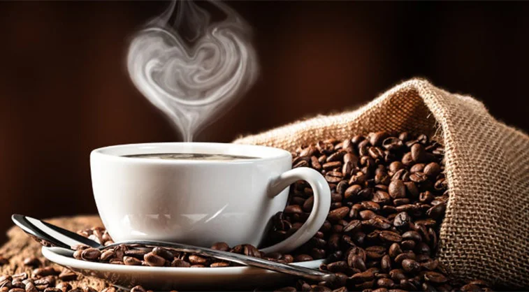

What’s Brewing

Signature Brew
Bold, smooth, and handcrafted with passion — our signature espresso blend never disappoints.

Oven-Fresh Pastries
From buttery croissants to gooey cinnamon rolls, everything is baked fresh each morning.
Welcome to Kindred Brew — where coffee meets comfort. We blend flavor, love, and a dash of magic in every cup. Whether you need a morning pick-me-up or an afternoon escape, we're here with open arms and warm mugs. Every sip is a love letter, every seat a quiet embrace, and every moment spent here is a whispered promise—because at Kindred Brew, coffee isn’t just a drink, it’s a feeling.